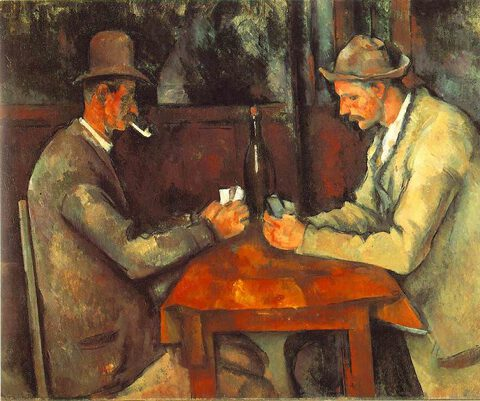

Paul Cezanne,1839 – 1906,Post-Impressionism,French,"Paul Cézanne (US: or UK: ; French: [pɔl sezan]; 19 January 1839 – 22 October 1906) was a French artist and Post-Impressionist painter whose work laid the foundations of the transition from the 19th-century conception of artistic endeavor to a new and radically different world of art in the 20th century. Cézanne's often repetitive, exploratory brushstrokes are highly characteristic and clearly recognizable. He used planes of colour and small brushstrokes that build up to form complex fields. The paintings convey Cézanne's intense study of his subjects.",https://en.wikipedia.org/wiki/Paul_Cézanne,47
